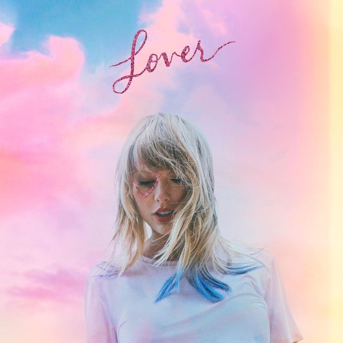

Lançamento:
23 de agosto de 2019
Gênero(s):
Pop - Synth-Pop
Duração:
61:48
Idioma(s):
Inglês
Gravadora:
Republic
Produção:
Taylor Swift - Jack Antonoff - Louis Bell - Joel Little - Frank Dukes - Sounwave
Crítica Musical
Lover é o sétimo álbum de estúdio da cantora e compositora estadunidense Taylor Swift, lançado em 23 de agosto de 2019 pela Republic Records. Como produtora executiva, Swift trabalhou com os produtores Jack Antonoff, Joel Little, Louis Bell, Frank Dukes e Sounwave no álbum. Descrito por Swift como uma "carta de amor ao amor", o álbum celebra os altos e baixos do amor e incorpora tons mais iluminados e alegres, afastando-se dos sons sombrios de seu antecessor, Reputation (2017). Musicalmente, Lover é um disco pop e synth-pop que contém influências de country, dream pop, bubblegum pop, funk, pop punk, R&B e indie pop. Lover conta com colaborações com Dixie Chicks, Shawn Mendes e Brendon Urie do Panic! at the Disco. O álbum foi precedido por três singles, os singles "Me!" e "You Need to Calm Down", "The Man", e a faixa-título. O álbum recebeu críticas positivas dos críticos, que elogiaram as composições de Swift, transmitindo maturidade emocional e honestidade. Alguns comentaristas, no entanto, acharam o álbum longo e inconsistente em certas partes. Lover estreou no topo das paradas em países como Austrália, Canadá, Espanha, Irlanda, Reino Unido e Estados Unidos, onde emplacou todas as músicas do álbum na principal parada americana, a Billboard Hot 100. Lover e seus singles receberam três indicações ao 62ª edição do Grammy, incluindo uma indicação ao Melhor Álbum Vocal Pop, que é sua terceira indicação consecutiva na categoria, após 1989 (2014) e Reputation (2017). Atualmente, Lover já vendeu mais de cinco milhões de unidades em todo o mundo, sendo 1 milhão apenas no EUA.